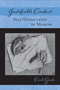

Browse
other Titles:
A B C
D E F
G H I
J K L
M N O
P Q R
S T U
V W X
Y Z |
|
James Naismith
The Man Who Invented Basketball
Rains, Rob with Hellen Carpenter
216 pp • 5.5x8.25 • Fall 2009
paper 978-1-4399-0134-2
cloth 978-1-4399-0133-5
Excerpt available |
 |
Japenese
Cities in the World Economy
edited
by Fujita, Kuniko and Richard Child Hill
360 pp • 6x9 • Spring 1993
cloth 978-1-56639-034-7
Excerpt available |
|
Japanese Women and the Transnational Feminist Movement before World War II
Shibahara, Taeko
222 pp • 6x9 • Spring 2014
cloth 978-1-4399-1038-2 |
 |
Jesus, Jobs, and Justice
African American Women and Religion
Collier-Thomas, Bettye
736 pp • 6.25x9.125 • Fall 2013
paper 978-1-4399-1105-1
|
 |
Jewish
Identity
edited
by Goldberg, David Theo and Michael Krausz
344 pp • 6x9 • Spring 1993
paper 978-1-56639-040-8
cloth 978-1-56639-039-2 |
 |
Jews
Against Zionism
The American Council for Judaism, 1942-1948
Kolsky,
Thomas A.
288 pp • 6x9 • Fall 1990
paper 978-1-56639-009-5
cloth 978-0-87722-694-9 |
|
Jews
and Gender
Responses to Otto Weininger
edited
by Harrowitz, Nancy A. and Barbara Hyams
352 pp • 6x9 • Fall 1994
paper 978-1-56639-249-5
cloth 978-1-56639-248-8
Excerpt available |
 |
Jim
Bunning
Baseball and Beyond
Dolson,
Frank
320 pp • 6x9 • Fall 1998
cloth 978-1-56639-636-3
Excerpt available |
 |
Job
Queues, Gender Queues
Explaining Women's Inroads into Male Occupations
Reskin,
Barbara F. and Patricia A. Roos
388 pp • 6x9 • Fall 1990
paper 978-0-87722-744-1
cloth 978-0-87722-743-4
Excerpt available |
 |
Job
Training For Women
The Promise and Limits of Public Policies
edited
by Harlan, Sharon L. and Ronnie J. Steinberg
572 pp • Spring 1989
paper 978-0-87722-762-5
cloth 978-0-87722-614-7 |
 |
Jobs and Economic Development in Minority Communities
edited
by Ong, Paul, and Anastasia Loukaitou-Sideris 320
pp • 6x9 • Spring 2006
paper 978-1-59213-410-6
cloth 978-1-59213-409-0
Excerpt available |
|
Jobs
Aren't Enough
Toward a New Economic Mobility for Low-Income Families
Iversen,
Roberta Rehner, and Annie Laurie Armstrong
296 pp • 6x9 • Spring
2006
paper 978-1-59213-356-7
cloth 978-1-59213-355-0
Excerpt available |
 |
Jookin'
The Rise of Social Dance Formations in African-American Culture
Hazzard-Gordon,
Katrina
248 pp • Spring 1990
paper 978-0-87722-956-8
cloth 978-0-87722-613-0
Excerpt available |
 |
Journey
to a Far Place
Autobiographical Reflections
Quinney,
Richard
152 pp • 8x10 • Fall 1990
cloth 978-0-87722-725-0
Excerpt available |
 |
Journeys in Sociology
From First Encounters to Fulfilling Retirements
edited by Darling, Rosalyn Benjamin and Peter J. Stein
Published in collaboration with the American Sociological Association Opportunities in Retirement Network
264 pp • 6x9 • Spring 2017
paper 978-1-4399-1475-5
cloth 978-1-4399-1474-8
|
 |
Journeys
of Women in Science and Engineering
No Universal Constants
Ambrose,
Susan A., Kristin L. Dunkle, Barbara B. Lazarus, Indira Nair
and Deborah A. Harkus
512 pp • 7x10 • Spring 1997
paper 978-1-56639-528-1
cloth 978-1-56639-527-4
Excerpt available |

|
Judging
Children as Children
A Proposal for a Juvenile
Justice System
Corriero, Michael A.
232 pp • 5.5x8.25 • Spring 2008
paper 978-1-59213-169-3
cloth 978-1-59213-168-6
Excerpt available |
|
Just
a Dog
Understanding Animal Cruelty and Ourselves
Arluke,
Arnold
232 pp • 6x9 • Spring 2006
paper 978-1-59213-472-4
cloth 978-1-59213-471-7
Excerpt available |
|
Just
a Temp
Henson,
Kevin D.
224 pp • 5.5x8.25 • Spring 1996
paper 978- 1-56639-386-7
cloth 978-1-56639-385-0
Excerpt available |
|
Just
Around the Corner
The Paradox of the Jobless Recovery
Aronowitz,
Stanley
176 pp • 5.5x8.25 • Spring 2005
paper 978-1-59213-138-9
cloth 978-1-59213-137-2
Excerpt available |
|
Just Who Loses?
Discrimination in the United States, Volume 2
Lucas, Samuel Roundfield
370 pp • 6x9 • Fall 2012
cloth 978-1-4399-0850-1 |
 |
Justice
and School Systems
The Role of the Courts in Education Litigation
edited
by Flicker, Barbara
456 pp • Spring 1990
cloth 978-0-87722-675-8 |
 |
Justice,
Law, and Violence
edited
by Brady, James B. and Newton Garver
368 pp • Fall 1991
cloth 978- 0-87722-843-1 |
|  |
Justifiable Conduct
Self-Vindication in Memoir
Goode, Erich
224 pp • 6x9 • Spring 2013
paper 978-1-4399-1026-9
cloth 978-1-4399-1025-2 |
 |
Justifying
Law
The Debate over Foundations, Goals, and Methods
Belliotti,
Raymond A.
312 pp • 6x9 • Spring 1992
paper 978-1-56639-203-7
cloth 978-0-87722-818-9 |
 |
Just Queer Folks
Gender and Sexuality in Rural America
Johnson, Colin R.
264 pp • 6x9 • Spring 2013
paper 978-1-4399-0998-0
cloth 978-1-4399-0997-3 |